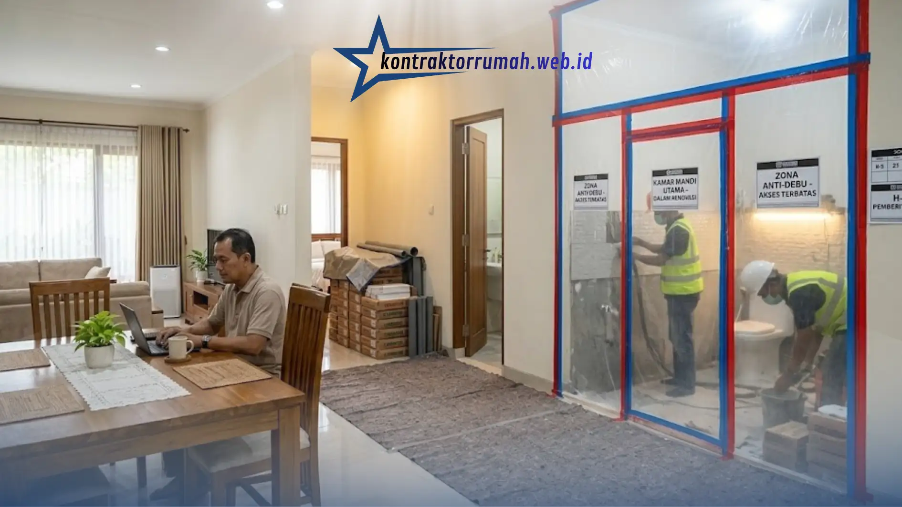

Melakukan tahapan renovasi rumah tanpa pindah hunian membutuhkan urutan pengerjaan yang matang: skala prioritas area (satu per satu), pembatasan zona debu secara kedap (dust barrier), penataan jalur mobilitas material tukang, serta pemilihan waktu kerja yang tertib. Dengan kerja sama kontraktor profesional, Anda tidak perlu keluar biaya sewa rumah sementara.
Sebagai kepala lapangan yang telah menangani puluhan proyek renovasi parsial, saya sering menemukan bahwa keberhasilan renovasi “sambil tetap dihuni” bukan soal keberuntungan, melainkan soal manajemen tahapan kerja yang disiplin sejak hari pertama.
Renovasi rumah sambil tetap ditinggali memang menuntut kompromi — ada area yang sementara tidak nyaman diakses, ada waktu-waktu tertentu yang lebih berisik dari biasanya. Namun dengan perencanaan tahapan yang tepat, penghuni tetap bisa menjalani rutinitas harian dengan gangguan minimal, sekaligus menghemat biaya sewa hunian sementara yang bisa mencapai jutaan rupiah per bulan.
Poin Penting
- Renovasi berpenghuni berhasil bila tahapan kerja diatur: skala prioritas, sekat anti debu, gudang material, dan tukang tertib.
- Sekat plastik kedap (dust barrier) dari lantai ke plafon dengan zipper door mencegah debu merembes ke ruang huni.
- Area basah seperti dapur & toilet dikerjakan bertahap, bukan sekaligus, agar kebutuhan harian tetap terpenuhi.
- Jam kerja tukang yang tertib (umumnya 08.00-16.00) menjaga waktu istirahat keluarga tetap terjaga.
- Renovasi sambil ditinggali dapat menghemat biaya sewa hunian sementara hingga jutaan rupiah per bulan.
5 Tahapan Kunci Renovasi Rumah Agar Rumah Tetap Bersih & Aman
Berikut tahapan yang selalu kami terapkan di lapangan agar proses renovasi berjalan tertib tanpa mengorbankan kenyamanan penghuni:
1. Penyekatan Zona Kerja Secara Kedap (Anti Debu & Kotoran)
Langkah pertama dan paling krusial adalah membatasi area kerja dari area huni menggunakan sekat plastik tebal (plastic sheeting) yang dipasang rapat dari lantai hingga plafon, dilengkapi selotip khusus di setiap sambungan agar debu tidak merembes ke ruang lain.
Pintu akses sementara (zipper door) dipasang pada sekat agar tukang bisa keluar-masuk tanpa membuka seluruh penutup plastik setiap saat. Lantai di jalur lalu-lalang material juga wajib dilapisi karpet pelindung atau alas terpal agar tidak tergores maupun kotor akibat lalu lintas alat dan bahan bangunan.
2. Pengerjaan Area Basah (Dapur & Toilet) Secara Bertahap
Dapur dan toilet adalah area yang paling sulit “dikorbankan” sepenuhnya karena kebutuhan hariannya tinggi. Solusinya adalah pengerjaan bertahap: jika rumah memiliki lebih dari satu toilet, satu unit dikerjakan terlebih dahulu sementara unit lain tetap difungsikan penuh.
Untuk dapur, penghuni bisa disiapkan dapur darurat sementara (portable stove di area lain) selama 3-5 hari saat pekerjaan keramik atau plumbing utama berlangsung. Kuncinya adalah komunikasi jadwal H-3 sebelum area basah “dinonaktifkan” sementara, sehingga penghuni bisa menyesuaikan rutinitas.

Renovasi toilet dikerjakan satu unit terlebih dahulu agar unit lain tetap dapat difungsikan penghuni.
3. Pengaturan Gudang Penyimpanan Material Sementara
Material bangunan seperti semen, keramik, atau rangka baja ringan sebaiknya tidak menumpuk sembarangan di ruang tamu atau garasi yang masih digunakan.
Idealnya, disiapkan satu titik gudang sementara — bisa berupa carport, halaman samping yang diberi terpal, atau kontainer portable — sebagai pusat penyimpanan dan bongkar-muat material. Penataan ini juga mempermudah kepala lapangan melakukan kontrol stok harian dan mencegah material tercecer ke area yang masih dihuni.
4. Pemilihan Tukang yang Tertib dan Terawasi Ketat
Faktor manusia sering menjadi penentu utama kenyamanan renovasi rumah berpenghuni. Tukang yang tertib akan selalu membersihkan sisa material di akhir hari kerja, mematikan alat listrik saat tidak digunakan, serta menjaga jam kerja yang wajar (umumnya pukul 08.00-16.00) agar tidak mengganggu waktu istirahat keluarga.
Pengawasan ketat dari kepala lapangan atau mandor harian memastikan SOP kebersihan dan keselamatan kerja dipatuhi setiap hari, bukan hanya di awal proyek saat pemilik rumah masih rutin mengecek.
5. Komunikasi Jadwal Kerja Secara Transparan dengan Penghuni
Tahapan terakhir yang tidak kalah penting adalah komunikasi jadwal kerja mingguan kepada penghuni — kapan pekerjaan yang bising berlangsung, kapan area tertentu akan dinonaktifkan sementara, dan kapan proyek diperkirakan selesai. Informasi ini idealnya disampaikan tertulis (grup chat atau papan info proyek) agar penghuni dapat menyesuaikan rutinitas harian, mulai dari jam kerja dari rumah hingga waktu istirahat anggota keluarga.
Estimasi Tabel Durasi Pengerjaan Renovasi Parsial Ringan
Berikut estimasi durasi kerja untuk beberapa jenis pekerjaan renovasi parsial yang umum dilakukan tanpa perlu pindah hunian:
| Jenis Pekerjaan | Estimasi Durasi | Tingkat Gangguan terhadap Penghuni |
|---|---|---|
| Cat dinding interior (1 ruangan) | 2-3 hari | Rendah |
| Pasang atap baja ringan (per 50 m²) | 4-6 hari | Sedang |
| Sekat dinding partisi (gypsum/kalsiboard) | 3-5 hari | Rendah-Sedang |
| Renovasi toilet (keramik & sanitasi) | 7-10 hari | Tinggi (area basah nonaktif) |
| Renovasi dapur (kitchen set & plumbing) | 10-14 hari | Tinggi |
| Perbaikan plafon & instalasi listrik | 3-5 hari | Sedang |
| Waterproofing area balkon/teras | 3-4 hari | Rendah |
Estimasi ini bersifat umum dan dapat berubah tergantung kondisi lapangan, ketersediaan material, serta kompleksitas desain yang diinginkan.
Hubungi Kontraktor Rumah: Solusi Renovasi Tanpa Ribet Jabodetabek
Pengalaman kami di lapangan menunjukkan bahwa renovasi rumah berpenghuni yang berhasil selalu bertumpu pada tim logistik yang disiplin menjalankan SOP kebersihan sejak hari pertama.
Tim Kontraktor Rumah menerapkan standar kerja ketat — mencakup penutupan lantai dengan karpet pelindung, segel plastik penahan debu di setiap zona kerja, hingga jadwal pembersihan harian sebelum tukang meninggalkan lokasi — memastikan rumah Anda tetap layak huni sepanjang proses renovasi berlangsung.
Jika Anda sedang mempertimbangkan renovasi parsial namun khawatir soal kenyamanan selama proses berlangsung, tim kami siap melakukan survey lokasi untuk menyusun tahapan kerja yang paling sesuai dengan kondisi rumah dan kebutuhan keluarga Anda.
FAQ Seputar Renovasi Rumah Tanpa Pindah Hunian
Renovasi rumah tanpa pindah hunian bukan sekadar soal menahan ketidaknyamanan sementara, melainkan hasil dari perencanaan tahapan kerja yang matang sejak hari pertama. Pastikan kontraktor Anda memiliki SOP kebersihan dan komunikasi jadwal yang jelas sebelum proyek dimulai.